The Tension問題の核心
USAA's mobile term life insurance app was evaluated against usability heuristics, but the standard approach missed something critical. Insurance is inherently tied to trauma — death, loss, the fear of leaving a family unprotected. The interface showed no awareness of this. Users were asked to make deeply emotional decisions through a flow designed with the same detachment as a utility bill payment. The standard heuristic lens caught navigation issues and form problems, but it couldn't explain why qualified leads were abandoning the application at such high rates. USAAのモバイル定期生命保険アプリはユーザビリティヒューリスティクスで評価されたが、標準的なアプローチは重要な点を見逃していた。保険は本質的にトラウマと結びついている — 死、喪失、家族を無防備にする恐怖。インターフェースはこの認識を全く示していなかった。ユーザーは公共料金の支払いと同じ無関心さで設計されたフローで、深く感情的な決断を迫られていた。標準的なヒューリスティクスではナビゲーションやフォームの問題は捉えられたが、有望なリードがなぜ高率で離脱しているかは説明できなかった。
My Approachアプローチ
I combined Jakob Nielsen's 10 Usability Heuristics with trauma-informed design principles — safety, respect, community, and dignity. This dual framework revealed issues that neither approach would have caught alone. The usability layer identified structural friction: unclear navigation, excessive cognitive load, poor error recovery. The trauma-informed layer revealed emotional friction: language that felt clinical when it should have felt supportive, progress indicators that amplified anxiety, and decision points that forced confrontation with mortality without providing emotional scaffolding. The recommendations addressed both dimensions simultaneously. Jakob Nielsenの10ユーザビリティヒューリスティクスとトラウマインフォームドデザインの原則 — 安全性、尊重、コミュニティ、尊厳 — を組み合わせた。この二重フレームワークにより、どちらか単独では捉えられない問題が明らかになった。ユーザビリティ層は構造的な摩擦を特定：不明確なナビゲーション、過度な認知負荷、不十分なエラー回復。トラウマインフォームド層は感情的な摩擦を明らかにした：支援的であるべき場面で臨床的に感じる言語、不安を増幅する進行インジケーター、感情的な足場を提供せずに死と向き合うことを強制する決断ポイント。推奨事項は両方の次元に同時に対処した。
Tools & Methodsツール＆手法
01 — Goal Setting: The engagement's north star, key success factors, and the four evaluation lenses used.01 — ゴール設定：エンゲージメントの北極星、主要な成功要因、使用した4つの評価レンズ。
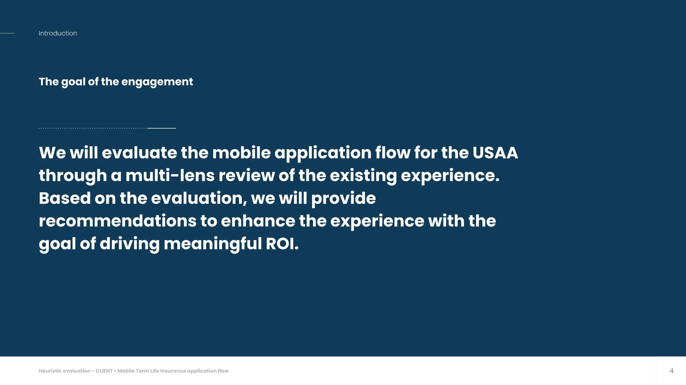
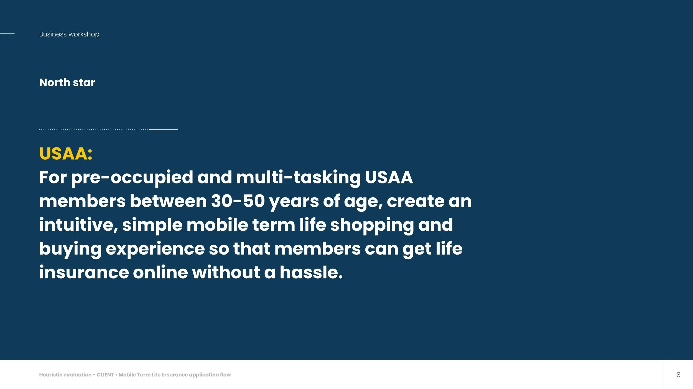
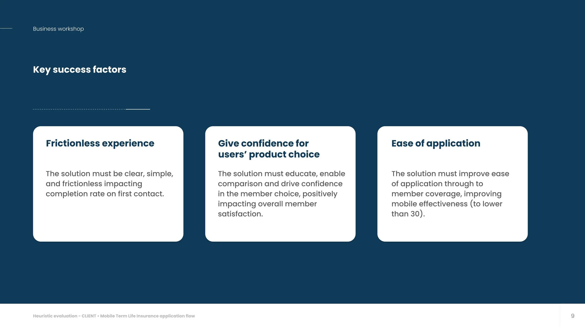
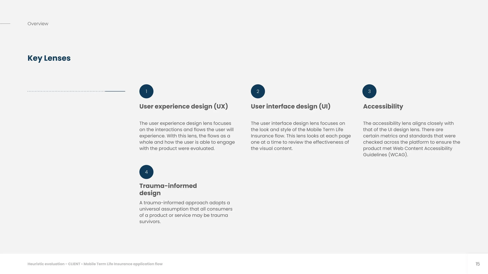
02 — UX/UI Evaluation: Severity summary — 6 Critical, 7 Major, 3 Minor, 1 Irritant issue — assessed against Nielsen Norman Group's 10 Usability Heuristics. Each screen below is the actual audited UI, annotated with the specific issue and recommendation.02 — UX/UI評価：深刻度サマリー — Critical 6件、Major 7件、Minor 3件、Irritant 1件 — Nielsen Norman Groupの10のユーザビリティヒューリスティクスに基づき評価。以下は実際に監査したUI画面そのもので、具体的な問題点と推奨事項を注記している。
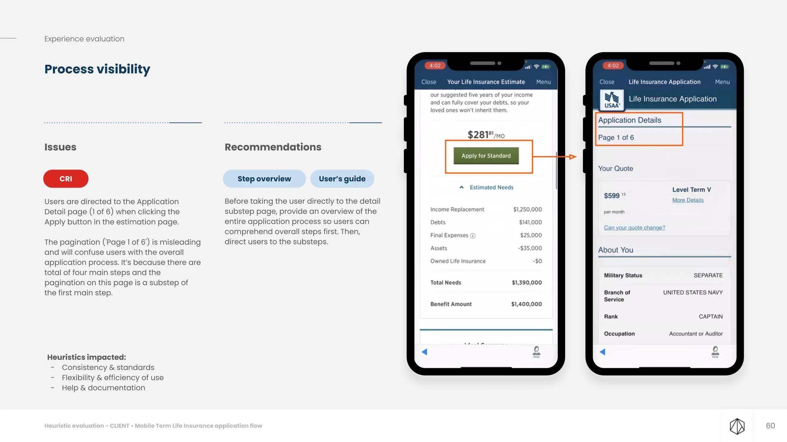
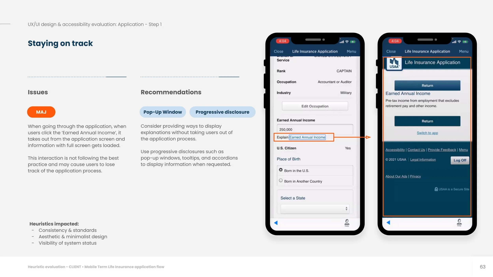
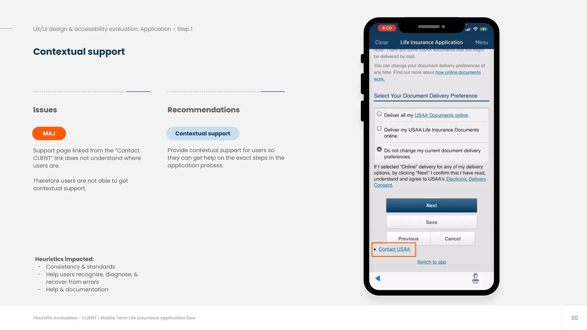
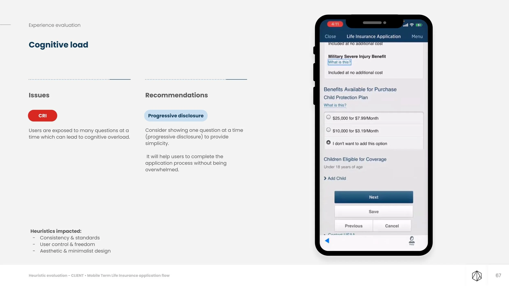
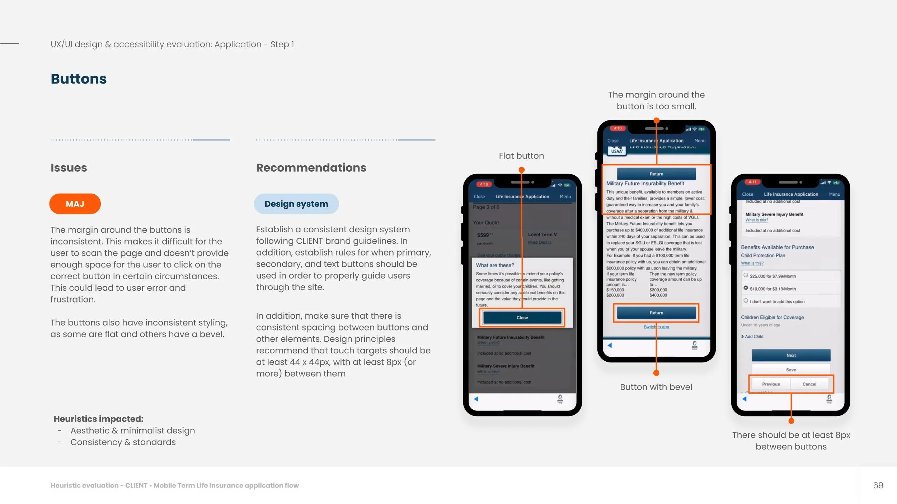
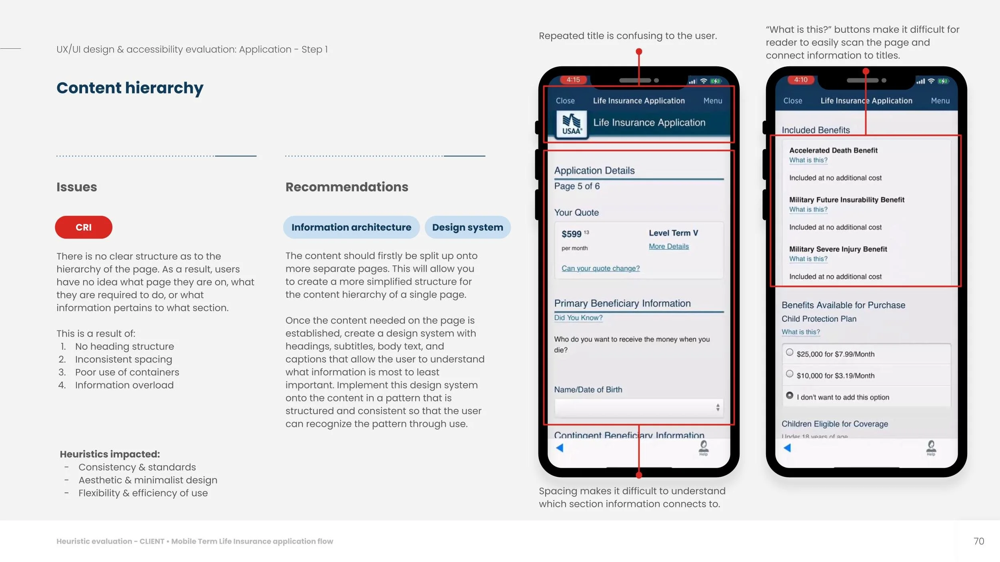
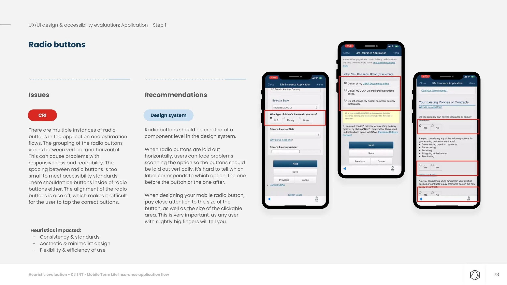
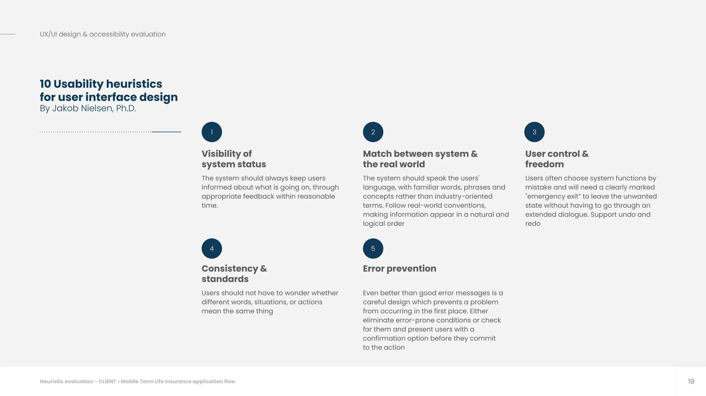
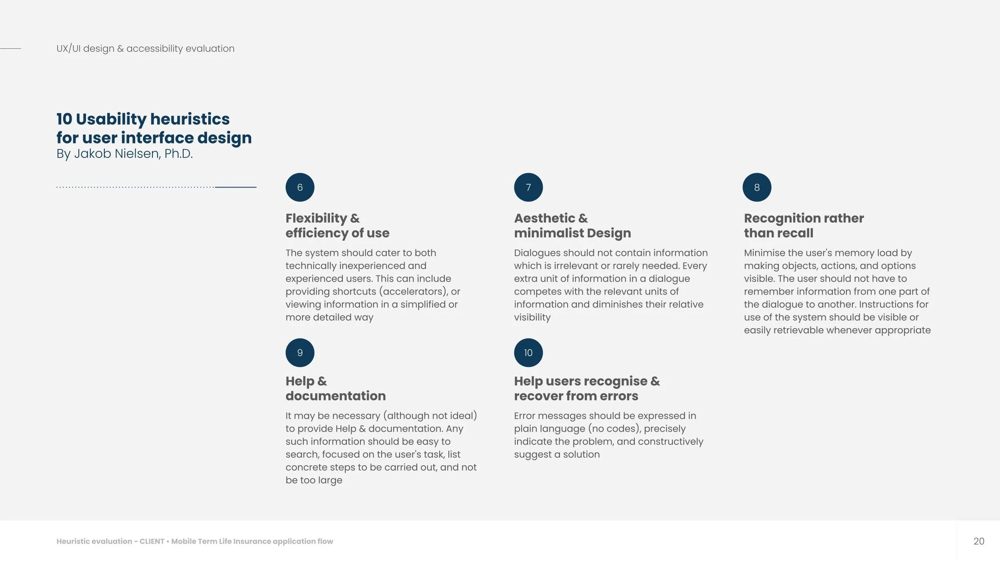
03 — Trauma-Informed Design Evaluation: Five principles — safety, trustworthiness, choice, collaboration, empowerment — applied to the same audited screens.03 — トラウマインフォームドデザイン評価：5つの原則 — 安全性、信頼性、選択、協働、エンパワーメント — を同じ監査対象画面に適用。
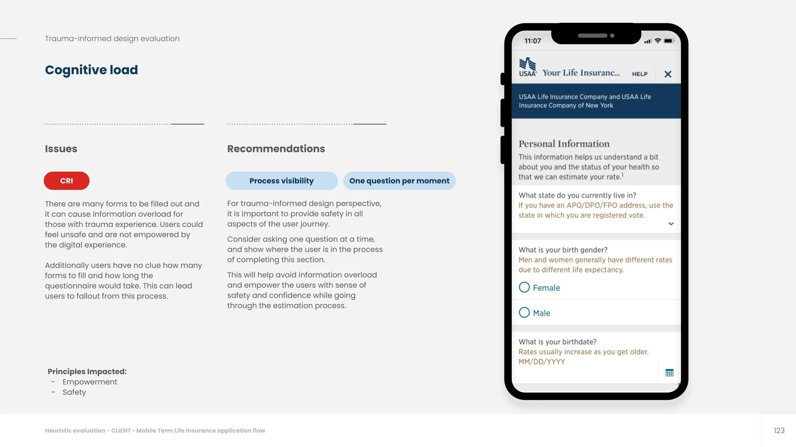
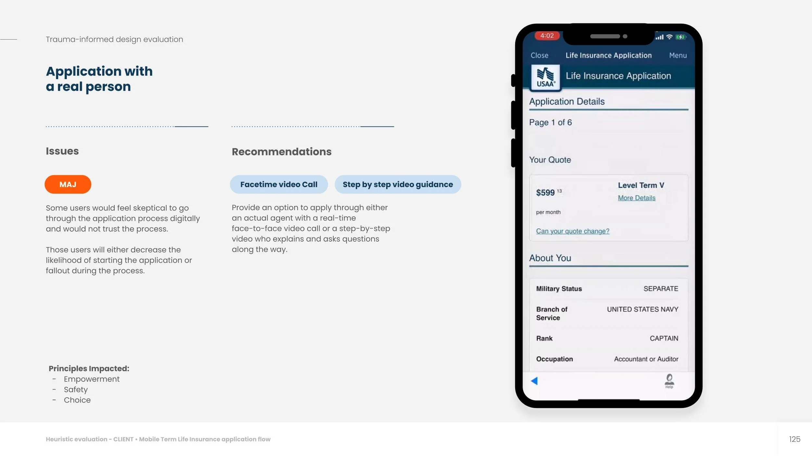
04 — Opportunities & Recommendations: Effort vs. value matrix prioritizing every UX, UI, and trauma-informed fix.04 — 機会と推奨事項：すべてのUX・UI・トラウマインフォームドの改善案を優先順位付けする工数と価値のマトリクス。
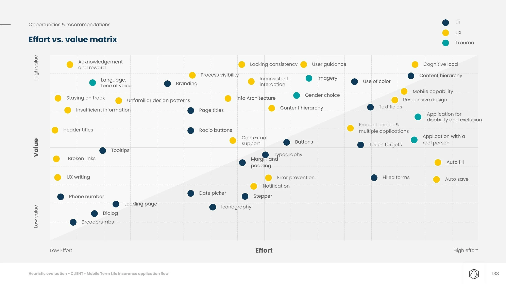
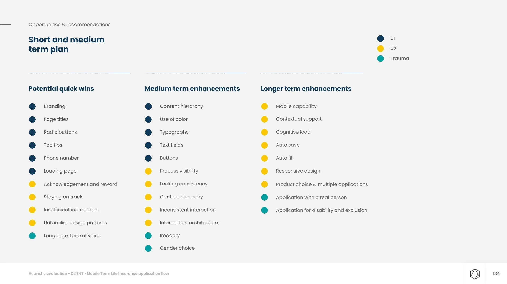
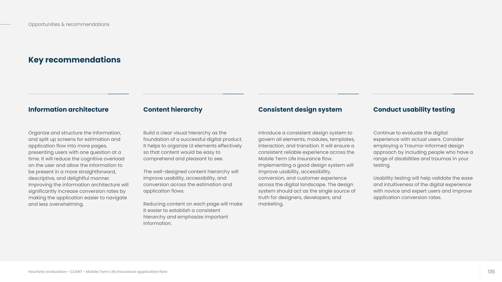
Deliverables成果物
- UX/UI Evaluation ReportUX/UI評価レポート
- Strategic Recommendations戦略的推奨事項
- Future Implementation Roadmap将来の実装ロードマップ
Methods手法
- Nielsen's 10 Heuristicsニールセンの10ヒューリスティクス
- Trauma-Informed Design Assessmentトラウマインフォームドデザイン評価
- Severity Rating重要度評価
Teamチーム
- Lead UX (project lead)リードUX（プロジェクトリード）
- Senior UX DesignerシニアUXデザイナー
- UI DesignerUIデザイナー
- Tech Leadテックリード
- Project Managerプロジェクトマネージャー